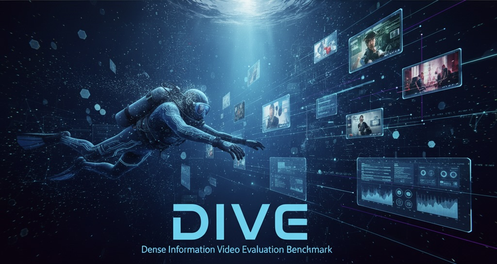

DIVE-Bench tests video-language models when evidence is not confined to a few keyframes—from long-form educational content to precise high-motion trajectories.
Haichao Zhang1, Wenhao Chai2, Shwai He3, Ang Li3, Yun Fu1
1Northeastern University 2Princeton University 3University of Maryland
00:0032:14
OCR
diagram
subtitle
motion
detail
Dense evidence requires temporal coverage→GRT reuses what stays static
317educational source videos
634educational QA items
1,000high-motion preview items
—evaluated LPM methods
01 / Benchmark
Two tracks. One missing capability.
Most video benchmarks reward sparse glimpses. DIVE-Bench isolates the harder case: details accumulate over long timelines, or change faster than sparse sampling can preserve.
A
Educational High-FPS Videos · LPM
Read and reason across educational video.
Questions target visible text and subtitles distributed across educational videos. The released, gated split contains 634 evaluation items, with two prompts per source video. This evaluation uses video frames, not an audio-input protocol.
OCR
Subtitles
Long-form
Open-ended QA
Primary rankingOpen MOS ↑
B
High-Motion High-FPS Videos · preview
Track fine motion at frame-level precision.
Models predict a hand trajectory over a semantic 3×3 image grid. Quality results are temporarily withheld while target/reference consistency is reviewed. The archived 1,000-item preview is distinct from the 3,243-item test split. Video access and underlying source licenses must be checked separately.
Trajectory
3×3 grid
Transitions
High FPS
Primary rankingGrid Accuracy ↑

Figure 1. DIVE-Bench couples information-dense evaluation with a token-efficient model pathway. Source: project paper.
02 / Method
Spend computation on what changed.
Gated Residual Tokenization (GRT) treats video more like a codec: preserve a full visual reference, then selectively recompute residual content while consolidating repeated scene semantics.
01
Dense frames
High temporal coverage
motion cues
02
Inter-token gate
Reuse static regions; recompute residual change
residual tokens
03
Scene merge
Consolidate semantically redundant tokens
compact context
04
Video LLM
Answer with temporally dense evidence
Inter-tokenization
Motion-aware gating reuses selected patch projections for visual regions that remain stable from frame to frame.
Intra-tokenization
Semantic-scene merging reduces redundant context after visual encoding while retaining dynamic evidence.
Measured efficiency
Recompute ratio measures patch-projection reuse; sampling density (fps) is sampled frames divided by source duration, not end-to-end throughput.
03 / Leaderboard
Complete protocol-screened leaderboard.
Switch tracks, search models, filter sources, and sort any metric. A dash means that the current public artifact did not report that field. For the LPM default rank, methods without Open MOS are placed after all scored methods, then ordered by Token F1.
Historical result snapshot20 Aug 2026
29 Educational results plus 12 educational GRT comparison rows (41 CSV records), audited 14 September 2026. High-Motion results are withheld pending target/reference consistency review. Full HTML tables (no JavaScript) · Download CSV · Comparison evidence. Historical scores are not a fresh GPU rerun. Missing Open MOS values are not zero; no score is imputed.
Four-family Educational GRT qualification
—
Educational GRT: does it beat the baselines?
All three promoted educational profiles exceed their archived and matched controls on Open MOS and Token F1 while recomputing fewer patch projections. This is a point-estimate result, not a significance claim or a win on every metric. The larger gap to archived Qwen baselines includes protocol differences and must not be attributed entirely to gating.
634 educational items per method, eight sampled frames; all controls shown
Family / control
Open MOS ↑
Token F1 ↑
Patch recompute ↓
Mean throughput (fps) ↑
Mean request time (s) ↓
Qwen 3B GRT is slower than its matched all-patch control on the reported mean throughput (1.673 vs 1.750 fps), despite better quality and lower patch compute. Timing is historical per-request telemetry, not repeated end-to-end speed benchmarking. Eight sampled frames do not establish high-FPS coverage; patch reuse is not end-to-end FLOPs. Inspect exact values and all control rows.
High-Motion target/reference review. A bounded check of four reference examples found a mismatch between the requested hand target and the source joint underlying the archived trajectories. Its full extent and original construction rules remain under review. A full 3,243-reference follow-up documents non-universal coordinate/grid agreement and data issues, not a universal label-correctness finding. All High-Motion results, including the previously protocol-screened baselines, are withheld from current tables and CSV. The unchanged 27-run historical protocol audit is retained as evidence, not as approved rankings. No High-Motion GRT superiority claim is made.
How to read the table
Metric glossary
There is no hidden composite score. Each track exposes its task metric and supporting quality or efficiency measures.
Result provenance. The immutable historical snapshot was generated from 21 evaluation artifacts on 20 August 2026. Educational Open MOS uses Qwen/Qwen3-VL-32B-Instruct as the open text judge. Public score audit · Pinned reproduction protocol. Frozen score bytes remain available in the original snapshot.
04 / Reproduce
Public code. Explicit reproduction limits.
The minimal code and numerical evidence are public. Rebuild the current view offline: 29 Educational results plus 12 educational GRT comparison rows, with standalone HTML, CSV and source evidence. High-Motion results are withheld pending reference review; the original 32-row snapshot remains unchanged as historical evidence. Fresh inference of the pinned three-arm educational GRT profiles and Open MOS require appropriate GPU resources and authorized data access; neither is implied by the numerical audit.
01 Use a dedicated environment; minimal DIVE-Bench and upstream lmms-eval share a Python namespace.
02 Keep the 1,000-item preview separate from the full 3,243-item task and from different API protocols.
03 Record model/data revisions, frame budgets, predictions, quality gates and request telemetry.
Framework submissions VLMEvalKit #1686 and lmms-eval #1521 are submitted Draft PRs, not upstream acceptance. Data permissions and manuscript/protocol differences remain documented in the public audit.
05 / Cite
Build on DIVE-Bench.
If the benchmark or GRT is useful in your research, please cite the project paper. The citation below identifies the earlier educational-scope arXiv version; the bundled revised manuscript covers both tasks.
@article{zhang2025dive,
title = {Dense Video Understanding with
Gated Residual Tokenization},
author = {Zhang, Haichao and Chai, Wenhao and
He, Shwai and Li, Ang and Fu, Yun},
journal = {arXiv preprint arXiv:2509.14199},
year = {2025}
}